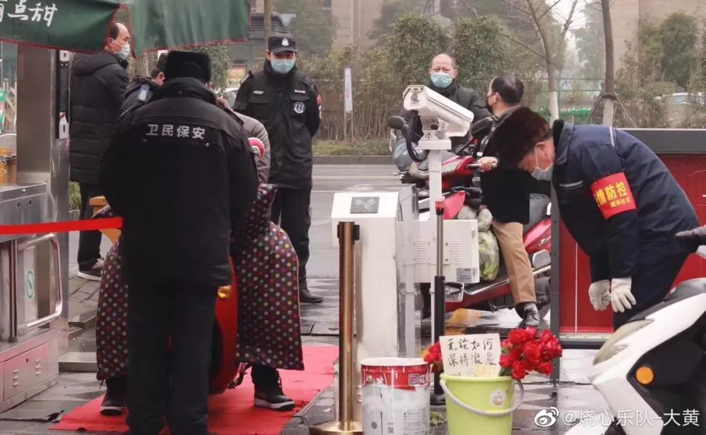
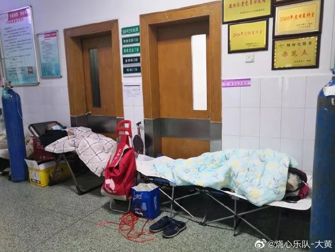
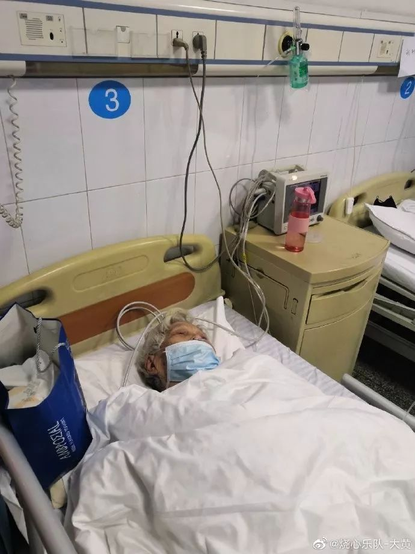
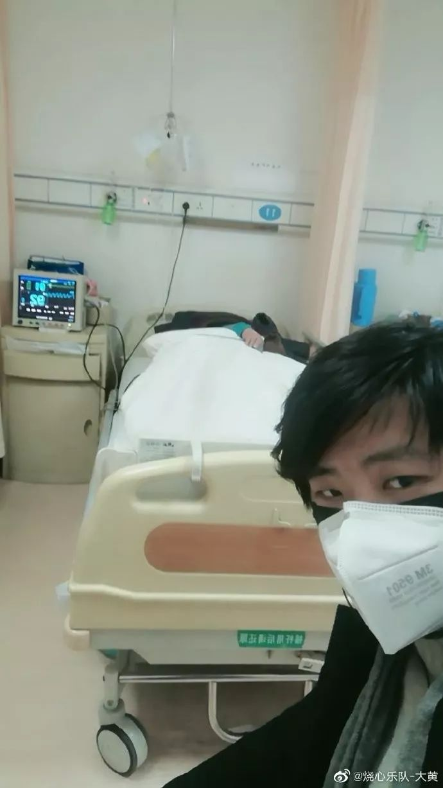

“封城”二十日里的武汉百步亭
原文链接 备份链接 澎湃新闻特约撰稿 张小莲 记者 任雾 实习生 蓝泽齐 这几天，江强（化名）明显感到工作进入“快车道”了。 居委会陆续来了增援的人，“应收尽收”的“死命令”下来，送病人做核酸检测、收治隔离，前些天最挠头的这些事，也畅通多 …

2月10日凌晨，爷爷头七那天，我在隔离酒店给他点了三根烟，磕了三个头，求他在天之灵保护他深爱的奶奶。
文 | 吴美芬
大黄，是武汉当地一支乐队的乐手，今年26岁。爸爸妈妈因病走得早，他自小在爷爷奶奶身边长大。1月底，爷爷奶奶相继感染新型冠状病毒，他独自承担起了照顾两位80岁老人的责任，不顾生命安危，在医院陪护。
我于2月2日与大黄联系上，那时他还在为爷爷奶奶住院抢救奔走，过去十几天我一直在通过微信陪伴和鼓励他，也见证他在医院为爷爷奶奶求医的过程。
2月3日，大黄的爷爷因为新冠肺炎去世，他至今没有把这个消息告诉仍在住院的奶奶。尽管隔着很远的距离，我也能感受到他在医院的焦虑——既不想放弃生活无法自理的爷爷奶奶，也害怕自己会被感染。
2月13日，大黄作为病人家属在隔离酒店调整后，接受了我的采访。
以下是他的自述：
如果可以，我想替爷爷送玫瑰给奶奶
今天是情人节，在朋友圈看到这样两张照片：“无论如何，保持浪漫。”

“无论如何，保持浪漫”
他们俩是娃娃亲，从小青梅竹马，在一起有80余个春秋了。爷爷一辈子默默地支撑家庭，照顾奶奶，挣钱、做饭、家务基本是爷爷在做，他特别爱我奶奶。
在这场疫情中，如果不是爷爷先离开，医院可能也不会重视奶奶，为她安排住院。奶奶是最幸福的女性。
住院前，奶奶跟爷爷一起为春节包的饺子放在冰箱里，我吃了一些，还剩一些。现在她还在住院治疗，我想等她出院了一起吃。
四岁时，爸爸因为脑肿瘤去世，妈妈独自带我比较困难，就把我寄托在爷爷奶奶家。高三时，妈妈因病也走了。我从小在爷爷奶奶身边，他们是我唯一的亲人。大学毕业后，我在外面工作，没再跟爷爷奶奶住，只是偶尔回家看看。
每次回家我都喜欢跟奶奶聊天，她经常跟我讲他们年轻时的事情。爷爷不怎么说话，闷声做事。爷爷是处女座，做什么事情都做得很完美，特别能干。一直以来都是他照顾奶奶。
腊月二十八，我回家过年。奶奶已经发烧几天了，她没跟我讲，我也没发现什么异常。直到当天晚上，突然看见爷爷拿体温计给奶奶量体温，我才发现奶奶发烧了。
他们对于疫情预防的意识比较薄弱，虽然之前我一直打电话跟他们讲尽量不要出门，但估计他们没当回事，还是出门去买年货。当时我抱着侥幸的心理，认为爷爷奶奶只是出过一次门，而且都80多岁了，应该去不了很远，只是在家附近的市场，不会那么容易就感染新型冠状病毒。
过了两天，奶奶不见好转。大年初一中午，一直照顾着奶奶的爷爷突然说不行了，一点力气都没了，浑身发冷。他躺在床上都起不来了。
这时，我才意识到可能是奶奶患了新型冠状病毒肺炎，然后传染给爷爷了。我马上给爷爷量体温，发现爷爷在发烧。
我赶紧通知家里的亲戚，并联系了社区，看有没有车送到医院去检查。当时武汉刚封城，城内特别的混乱，根本没法出行，社区也没车。我打电话给120，一直打不进去，后来又联系110， 110直接回复说没有防护服来不了。
我们只好走路到社区医院，两个老人搀扶着，走了大概有20分钟，特别吃力。下午3点左右到社区医院，挂号排队后，医生说爷爷奶奶发热了，社区医院看不了，要直接去大医院。我给社区负责人打电话沟通，最后社区医院给看了病，开了些药。
我们家住在一栋旧楼的10层，电梯是有专人看管的，看管的人下班后，电梯就会关掉。我们回到家是晚上7点半，电梯已经停了。我没有看管电梯师傅的电话，没办法，只能爬楼，两个老人去医院看病靠走路，回来还要爬10层楼，加上生病浑身乏力，真的耗费很多体力。
从那天开始，爷爷奶奶的病情慢慢恶化。
1月26日，我联系到120将他们带到了指定的汉口医院看病。医生开了三天药，也没有安排住院。只是说没核酸检测确诊，没办法安排住院，从CT上看是新型冠状病毒感染，让爷爷奶奶拿药回去吃，增强营养。
当天排队、检查、等结果，搞了六七个小时，夜里12点才结束。回到家，电梯又停了，又爬10层楼梯。
两个老人看病的流程很繁复，特困难，耗费大量体力，病情进一步恶化，没得到及时的治疗。
三天药吃完，他们的病情没见好转。1月29号，爷爷难受得直喊“不舒服”。我给他量体温，高烧到39度。
我感觉再耗下去肯定是不行的，就联系了社区。社区给我们安排车，把爷爷奶奶送到了协和医院。当时医院人已经非常多，都爆满了，连号都挂不上。护士说：“今天发热门诊的号挂完了，你在这等一天都不可能有号，明天再来”。
我肯定是不会带爷爷奶奶回去的，因为两个老人本来就是病到不行了才来医院。我们就在医院门诊坐着等，最起码人在医院还是会安全一点的。
爷爷奶奶从中午一直等到晚上八九点，人稍微少了一点。我就去找医生求情，希望没有挂到号也可以帮爷爷奶奶看病。那医生人比较好，就帮忙看了。
医生给爷爷奶奶检查了血液和CT，基本确定是受到感染了，但还要做核酸检测，他给我们开了单子，让我第二天早上7点来排队，因为核酸检测是限额的，做完就不做了。
幸好，那晚奶奶睡着了
1月30日，我们一大早跑去排队做核酸检测，一直等到下午两点半才做到。2月1日上午10点左右，我的手机收到核酸检测的结果，爷爷奶奶均是阳性。我把结果告知社区，社区当天下午两三点钟，给我们发了一个红十字医院的入诊通知单。
当时社区跟我讲，有了入诊通知单就可以住院，并安排车把我们送到了红十字医院。医院门口有人看守，手里拿着一份名单，查了一遍，没看到我爷爷奶奶的名字，不让我们进去。
我们就只能坐在医院门口等。
我是强行着把爷爷奶奶送进医院的。我以为进去了，有了名单就可以住院了。其实不是，有了名单，只是可以进医院看病做检查。
2月2日，我们一直在医院等到晚上11点，根本没人管我们，就只是坐在那。我想社区的信息不靠谱，只能靠自己。
我就跑到门诊去找医生，医生说已经确诊门诊管不了，去急诊那边找急诊医生。我赶紧又跑到急诊去，到那一看，一个医生都没有，只有一个护士，医生都去抢救病人了。
大概两个小时后，急诊的医生才来开了药，给爷爷奶奶安排了留院观察，在板凳上打吊瓶。

爷爷奶奶在医院打针，自己带的小板凳就是个心型
就我一个在医院看着他们，爷爷浑身发冷，奶奶不停地在喘气，都走不动路，上厕所一定要有人带着去。爷爷还在医院的厕所摔倒过一次，蹲下去根本起不来。
当时我想留观的话，不是一天两天的事情，坐着也不是办法，就想着弄折叠床或者躺椅。后来社区的人帮我弄来了两个躺椅，摆医院的走道上，氧气瓶放在旁边。氧气瓶好重，我帮他们铺好躺椅，搬好氧气瓶累到心跳加速，呼吸到肺都疼。
到了2月3日晚上，我有点坚持不住了。已经一天一夜没睡觉了，特别累，睡不着，也不敢睡，怕自己睡着了，爷爷奶奶有事情不能及时去叫医生。
这晚，爷爷奶奶都在喘气，喘、喘、喘，我看了特别心疼。
爷爷奶奶在过道入睡
还有个病人在路过时把氧气瓶绊倒了，氧气不断地往外喷，幸好有三个护士冲了过来解决了危机。
晚上9点，爷爷的行为举止有点奇怪，不断地呻吟。医生说老人感染了这个病毒到了末期，大脑缺氧损伤神经是这样的，让我做好心理准备，然后平淡地走开了。
22点，爷爷奶奶被分配到了不同的床位，爷爷去的是抢救室的病床，当时我心里就有数了。因为我看到好几个人从那里被抬走，才空出来的病床。


2月3日爷爷奶奶在医院
抢救室里睡着很多需要抢救的病人，门口还有尸体，白布包裹得严严实实的，摆在那里等着第二天殡仪馆来送走。
两个老人都要打针，我只能两头跑。一边是爷爷快不行了，神智不清地胡说话，需要医生抢救。一边是奶奶要上厕所，我不能让她知道爷爷的情况，很焦急，却只能假装淡定地陪她聊天。跟她说会好的，没事的。
我也在心里给自己打气：“很多人走的时候，亲人都不在身边，都不能相互看一眼，爷爷奶奶，起码我在。没事儿，不留遗憾。”
当天晚上医生跟我说，如果爷爷断气了，他不会采取心外按压的抢救措施，因为一按压的话，病毒全都出来了，反而不安全。他还说老人基本上到了这个程度是救不回来的了。医生就在那里不断地跟我做心理工作，要我做好准备。
我只能静静地等候，2月3日凌晨4点06分左右，爷爷就走了。
幸好，那晚奶奶睡着了，我可以在爷爷这边一直陪着。
我肯定放弃不了
当天，医生因为爷爷去世的事，照顾我们为奶奶安排了住院。住院大楼的病房跟我想象的不一样。我在电视上面看到央视报道金银潭医院的病房是那种有隔离玻璃隔离的，一个人专门看护两个病人那种。
这边的医院完全不是。
当时我以为奶奶住院了，有专人看管，我就可以去隔离了。
其实就是普通的病房。奶奶生活无法自理，没人照顾，我不放心，只好硬着头皮留了下来。我是被迫住进病房的，医生都不让我待在里面，还说只要发现我摘下口罩，就把我赶走。
当时我在想，不能摘口罩，怎么吃饭怎么喝水呢？但我还是不能走，奶奶吃饭、打针、上厕所都需要人盯着，我走不开。
爷爷走了，我也不能让奶奶知道。我喂奶奶吃饭时，她会问爷爷吃了没，喝水没。我就骗她说，爷爷情况比你好一些，稳定一些，你自己该吃吃该喝喝，不用担心他那么多。
病房是男女分层的，男的一层，女的一层，有时候我喂奶奶吃完饭，或者扶她上完厕所后，我会故意说，你睡一会，我去爷爷那边看一下。然后我就出病房，在医院走道或者其他地方角落逛一下再回来。
我不想因为爷爷去世这件事情吓到她，一直在鼓励她，没有给她很多压力。我一直跟她讲，把饭吃了，药吃了，病就好了。她也一直在坚持，没有吓自己。
2月4日，我已经在医院连续待了四天，没有防护服，只有口罩。

大黄在陪护奶奶
医院给每个病人准备了饭，同病房阿姨每次都跟医生多要一份饭给我，后来几天护士主动分饭给我。刚开始两天没饭吃，吃的是我在武汉的同学送来的泡面和饮料。
吃是够的，但不太方便，因为口罩不能随便摘。我就在医院找一个我觉得安全的角落，摘下口罩赶紧吃完。
可能是心理的原因，我开始感觉支气管有灼烧感，吸气会疼。可能口罩戴太久了，闷住了，当时我有点害怕。我拿体温计测了一下，是37.2度，我问医生这个算不算发烧，他说没发烧，但也要注意。
我想临时在医院做一个CT检查，医生却说要通知社区到对口的医院才能做检查。
我戴了4天的口罩，几乎没摘下来过，皮筋勒得紧紧地，火辣辣地疼。当时我特别想摘一下口罩，让耳朵休息一下，然后再好好睡一觉。可是我不能，因为奶奶生活不能自理，走不开。我觉得很失望，特别无助，感觉自己会猝死。
2月5日，我在医院的第五天，奶奶的情况终于好了一点，主动吃东西，吃了一个包子，喝了很多水，也打了免疫球蛋白。我自己也终于可以睡了一觉，还吃了点预防感染的药。
真的很感恩，当时我对自己说，疫情过后要好好生活，奶奶也是放不下我，盼着我能有个好的生活。
很多人都劝我，说奶奶已经这么大岁数了，完全靠自己，我要赶紧去隔离，保全自己。有亲戚也跟我讲：“你要保住自己，你是家里的独苗，你要是倒了，怎么办？要考虑一下。你出来保全自己，家里人都不会怪你的。”
前两天医院还可以正常进出，后来突然封了门，家属进不了。有一次我被关在外面进不了。我就跟守门的那几个人求情，说爷爷奶奶在里面生活不能自理，我必须要进去。
他说你自己决定好，你一个正常人，里面全是病人，进去了就出不来了，自己做好准备。当时我下定决心一定要进去，不管会不会被感染。
其实他们说的道理我都懂，但是在病人跟前，在生活无法自理的爷爷奶奶跟前，不是说走就走的。我现在走了，就相当于放弃了他们生命。我肯定放弃不了。
2月7日，也就是在医院待的第七天，我开始有点发热，也累到不行了。医生建议我赶紧去隔离观察，说奶奶九死一生，没必要再搭上我了。奶奶这边有护士可以照顾，该做的他们都会做。
最后我也想通了，跟奶奶交代了很多要注意的细节，就回家了。我跟奶奶讲，一定要吃药，一定要吃饭，氧气面罩不可以脱下来，吃喝拉撒也不要下床。不吃药、不吃药、没氧气就会死。
奶奶听了就一直说好好好。奶奶是很想活下去的，她很有信心，没交代遗言之类的话。
她让我回家把家里吃的东西和碗之类的清理一下，因为我们离开家那天走得特别急，什么都没收拾。

爷爷奶奶为春节包的饺子
走的时候，我在心里对自己说：“我实在是没办法了，奶奶，你自己一个人要坚强活下去，你说你想看我接媳妇那你就一定要看着。”
现在我在社区安排的隔离酒店进行隔离。有时跟奶奶通电话，她说话还比较有力气，没有很虚弱了。今天已经是25天了，奶奶很有毅力，还在坚持。
2月10日凌晨，爷爷头七那天，我在隔离酒店给他点了三根烟，磕了三个头，求他在天之灵保护他深爱的奶奶。
后记：
大黄跟我说，爷爷走后，他有很多的抱怨，甚至想过要去做一些破坏性的行为。后来，因为有来自全国各地的网友的支持和鼓励，他不满的情绪慢慢消退了。
他说，疫情会让我们更团结。我很高兴，看到一个有孝心、有勇气的青年，在众人的陪伴中，重新恢复了对美好生活的希望，在尽己所能改变世界。我想，这就是这个情人节的特殊之处吧。人间自有真情，无论多难，我们都可以携手往前走。
（文中“大黄”为化名）
「相关文章」
「我们是谁」
我们是独立纪录片团队“云林街十七号”
致力于记录疫情之下
民间最真实的光景
「征集活动」
我们想要邀请你参与我们的创作，
为我们提供湖北本地市民的一手素材
城市和社区是如何消毒杀菌的？
窗外的街道在此刻又是怎样的光景？
出口封闭后您的居家生活是怎样的？
只要是你在疫情期间曾经拍摄过的视频
我们都欢迎你们的投稿
「投稿方式」
来稿至邮箱：774217664@qq.com
标注“视频投稿”，并留下联系方式
（请在邮件正文简单介绍一下
各个视频的拍摄时间）
也可以加我们工作人员的微信
15827608198
了解征集详情并答疑
「联系我们」
欢迎关心武汉疫情和“云林街十七号”的你
进入我们的微信群
后台留言“进群”
加志愿者微信
原文链接 备份链接 澎湃新闻特约撰稿 张小莲 记者 任雾 实习生 蓝泽齐 这几天，江强（化名）明显感到工作进入“快车道”了。 居委会陆续来了增援的人，“应收尽收”的“死命令”下来，送病人做核酸检测、收治隔离，前些天最挠头的这些事，也畅通多 …
原文链接 备份链接 _ 送物资魔幻现实主义的一天 _ 作者：Haylin 坐标：武汉积玉桥 职业：自由职业戏剧人 自从进了8方公益志愿者小组，我从信息部跳到外联部跳到规划部。我们规划部就是专门联系金主爸爸和物资爸爸的。 之前联系到了一家生 …
原文链接 备份链接 翁文的爸爸和奶奶，在武汉相继患上了新冠肺炎。在北京工作的翁文，每天只能通过监控，关注着他们的一举一动。几经折腾，爸爸终于入院，83岁的奶奶却依旧孤立无援。 文 | 吴美芬 翁文是一名在北京工作的武汉人，他远在武汉的爸 …
原文链接 备份链接 凤凰新闻客户端 凤凰网在人间工作室出品 对于刚刚年满十八岁的少年小雨来说，2020年1月25日，大年初一晚上，是他生命中迄今最漫长的一夜。 武汉下着雨。第一人民医院发热门诊急救室外的走廊上，小雨和母亲相偎在没有温度的椅 …
原文链接 备份链接 伴随着火神山、雷神山医院开始收治病人，15家方舱医院陆续启动， 各省医疗队开赴武汉，武汉所有确诊患者与疑似病例都将“应收尽收”。 在人类抗击疫病的历史上，“武汉会战”已成为一场史无前例的超级行动 图/新华、中新 武汉 …